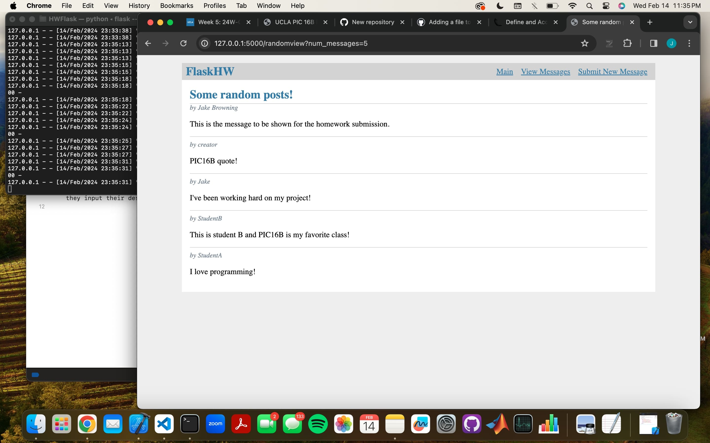
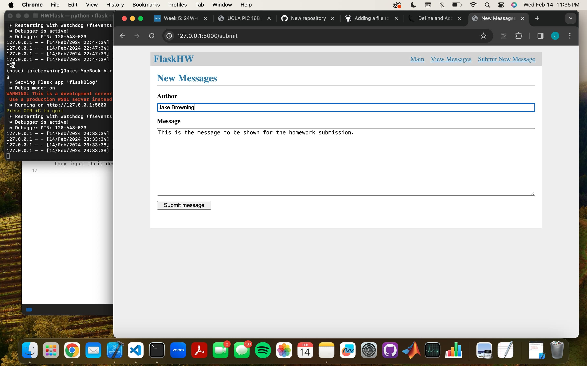

We will start the tutorial with the init.py file. The first function we see in this file is create_app(). The function effectively the creation of the app. As we can see, in the first line, we will set the app to be an instance of the Flask class that we imported at the top of the page. Next we begin to configure the app by defining where the database is to be located, by mapping the database to the ‘flaskBlog.sqlite’ file. If you are wishing to use a different file name for your database, that is fine, but just be sure to use that file name here instead of the one that I used. It is important to note, that for this we must import os at the top of the page. The function os.path.join shows the computer how to reach the file we have specified. Continuing downward, we see a hello() function. This function is not critical to this project, but is useful in checking that the app is working correctly and also happens to be an easier wsay to explain how these functions work. Above the function we see the command ‘@app.route(’/hello’)’ which is critical to this function. This ties the url route ‘/hello’ to this function, a practice we will use pervasively throughout this project. This page simply prints out ‘Hello, World!’, but other pages will have more complex applications. The following commands are all imports that we will revisit later after we have defined the functions that they are referring to. Let’s move over to the db.py file. This file is responsible for defining most of the basic commands necessary for setting up our database. The first thing we want to do is to import sqlite3. This allows us to make an sqlite3 database on this page. We will also import click for a later function, but more importantly, we import both current_app and g from the flask library. g is a special object that is able to be accessed by multiple functions, which is also unique for each request. Similarly, current_app is another special object that points to the Flask application handling the request. We will ensure that current_app will be able to be used by importing this file into the other .py files. The first function we see is get_db(). We first want to check that there is no database currently in our special instance g. If there is not, logically we want to begin to access the database. We define the database connection by creating an attribute db of g, and setting it to sqlite3.connect(), effectively making it a cursor we can use to search the database in later functions. We then return this attribute so that when we import it into other files, we can effectively use this as our cursor. The next function close_db() is rather self explanatory. We need a way to close the connection to the database if the database is open. We check if it is open by writing the if statement ‘if db is not None:’. This way, we only attempt to close the connection if it exists, which we do within the if statement by calling db.close(). We now come across our function that is called when we are intiating the database, init_db(). Using the function we just defined, we call get_db() to create a cursor, and using that we open the schematic that we write for the database, defining the tables, rows, columns, and titles to be held within the database. The next function gives us a way to call the function we just created. We call @click.command(‘init-db’) so that we can call the function using a command line command. Now, when we call this function via the command, we can see that it simply calls the init_db() function and recieve a message letting us know that we have successfully initialized the database. Finally, we come to the init_app() function. This function will be used to ensure that the cursor is closed when it needs to be. In order to ensure that the cursor is closed each time after returning a response, we will use the function teardown_appcontext(). This calls whatever function is within the parentheses whenever a response is returned, so we choose to call close_db() whenever a response is returned. Finally, we want to travel back to init.py and look at what we imported from this page. By importing db.init_app(app), we allow ourselves to initiate the database within the init.py file. Let us now take a look at our last .py file, blog.py. This file will contain most of what we see on the web app. We will import several useful methods from flask up top to be able to run our code. Taking a look at the first function index(), we see it appears to have a similar formate to the hello() function we saw before. Using the @bp.route(‘/’), we define the URL extension to be the backslash to access this page. First thing we do in this function is define db to be the cursor we get from the get_db() function we created in the previous page. Now, we will use this cursor to access the database. We now select both the author and body attributes from every post in the database, and set this list to be the list posts. This will be used in the html to show all of the posts that are contained within our database. This is useful for debugging and being able to view the database in a user friendly manner. Now we reach the return line of this function by calling render_template() we tell the computer to run the html file template we have created for this page called ‘index.html’. In my case, this file is contained within a blog folder, hence the ‘/blog’ before the ‘index.html’. We also choose to pass the posts list to the template as it is used to display the posts on this page. Continuing on, we get to the function used to insert new messages into the database. We see the function is associated with the URL extension ‘/submit’, however this time we also define the methods(‘GET’, ‘POST’), as any user request will be considered a ‘POST’. We check to make sure that this is the case via the if statement at the beginning of the function. Now we need to get input from the user so that we can input their name and their message. We do so by using the request.form[] function, allowing us to use the input to define the variables. We then check that the boxes have been filled, and send an error if they have not been. If everything is working well, we then use the get_db() function to access the cursor again and use it to insert the new message with its author into the database. We ensure to call db.commit() to save the new information into the database and call for a redirect. This function sends us back to the main page by calling the index function in the blog.py file, or in other words the function above this one. We also make sure to render the template for this page so that the html file we write will appear on this page. The random_messages function again uses the cursor we acquire from get_db(). We then use a special command for the cursor ‘RANDOM()’ to select the rows from the database in a random order. We use the variable n to determine how many rows are to be selected, and then set this to the list messages to be returned by this function. The view function is associated with its own URL and is the page used to determine how many random posts the user withes to see. We use request.form.get() to take in the user input. Then again, assuming no errors, we call random_messages function with the user inputted amount of function and pass it to our final function randomview(). This final function is associated with its own URL and gets random messages from the random_messages function. We call int(request.args.get(‘num_messages’)) to get the amount of messages desired by the user, a value passed by the previous page. Finally, we will take a look at our template for the new post page. First, we extend ‘base.html’ so that we can keep what we coded in that. We now define our header under the {%block header%} and set the block title to ‘New Messages’. Next, we get to the block content. We create a label titled ‘Author’ which is used for our input. This title is placed with the input text box that sends its input to the value request.form[‘author’] which we use to input the value into the database. We then do the same for the message, however this time we define a textarea to create a bigger box for the user to input their message. Finally, we create a submit button that says ‘Submit message’ for the user to click after they input their desired information.  
https://github.com/jakebrowning02/PICHHW3